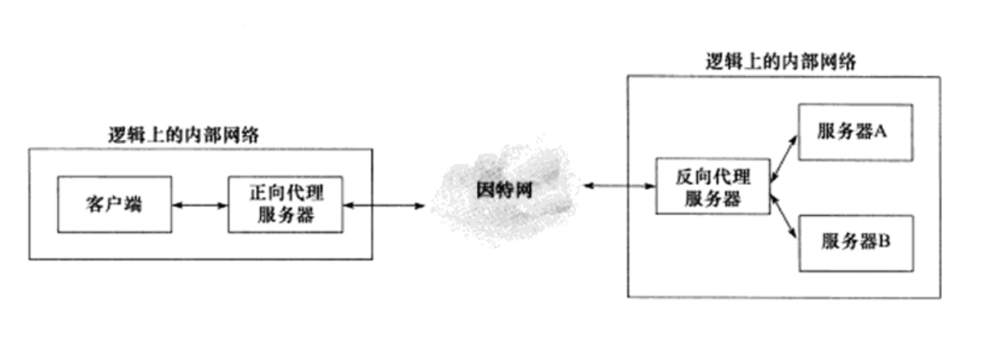
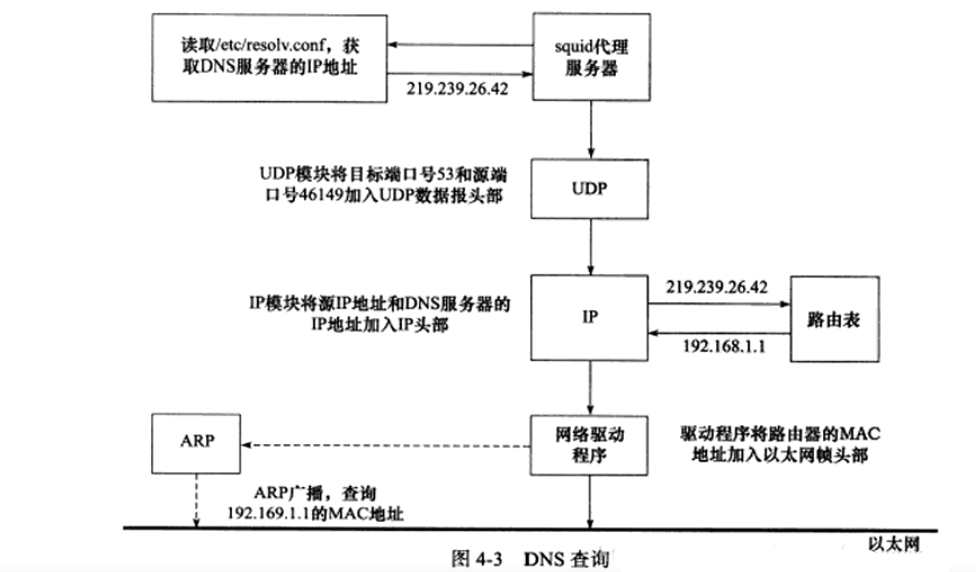

Linux高性能服务器一
TCP/IP通信案例：访问Internet上的Web服务器
基本原理
代理服务器：客户端和目标服务器之间提供对目标资源的中转访问。
正向代理服务器：要求客户端自己设置代理服务器的地址。客户的每次请求都会直接发送到该代理服务器，并由代理服务器来请求目标资源。
反向代理服务器：设置在服务器端，因而客户端无须进行任何设置。反向代理是指用代理服务器来接受Internet上的连接请求，然后将请求发送给内部网络上的服务器，并将从内部服务器上得到的结果返回给客户端。
透明代理服务器：设置在网关上，用户访问Internet的数据报必然都经过网关。透明代理可以看作正向代理的一种特殊情况。
访问DNS服务器
读取/etc/resolv.conf文件获得DNS服务器的IP地址，然后把控制权传递给内核中的UDP模块。UDP模块将DNS查询报文封装成UDP数据报，同时把源端口号和目标端口号加入UDP数据报头部，然后UDP模块调用IP服务，IP模块将UDP数据报封装成IP数据报，并把源端IP地址和DNS服务器的IP地址加入IP数据报头部。接下来本地查询域名的IP地址。
本地名称查询
通过主机名访问本地局域网上的机器时，则可通过本地的静态文件来获得该机器的IP地址。Linux将目标主机名及其对应的IP地址存储在/etc/hosts配置文件中。当需要查询某个主机名对应的IP地址时，程序将首要检查这个文件。
HTTP通信
可以看到，三次握手建立TCP连接，之后是请求与响应，最后是四次握手关闭连接。
HTTP请求消息

1 | |
请求方法
HTTP1.0 ： GET、POST 和 HEAD
HTTP1.1 ：OPTIONS、PUT、PATCH、DELETE、TRACE 和 CONNECT
| 序号 | 方法 | 描述 |
|---|---|---|
| 1 | GET | 请求指定的页面信息，并返回实体主体。 |
| 2 | HEAD | 类似于 GET 请求，只不过返回的响应中没有具体的内容，用于获取报头 |
| 3 | POST | 向指定资源提交数据进行处理请求（例如提交表单或者上传文件）。数据被包含在请求体中。POST 请求可能会导致新的资源的建立和/或已有资源的修改。 |
| 4 | PUT | 从客户端向服务器传送的数据取代指定的文档的内容。 |
| 5 | DELETE | 请求服务器删除指定的页面。 |
| 6 | CONNECT | HTTP/1.1 协议中预留给能够将连接改为管道方式的代理服务器。 |
| 7 | OPTIONS | 允许客户端查看服务器的性能。 |
| 8 | TRACE | 回显服务器收到的请求，主要用于测试或诊断。 |
| 9 | PATCH | 是对 PUT 方法的补充，用来对已知资源进行局部更新 。 |
HTTP响应消息
头部+空行+正文
1 | |
HTTP状态码分类
| 分类 | 描述 |
|---|---|
| 1XX | 信息，服务器收到请求，需要请求者继续执行操作 |
| 2XX | 成功，操作被成功接收并处理 |
| 3XX | 重定向，需要进一步的操作以完成请求 |
| 4XX | 客户端错误，请求包含语法错误或无法完成请求 |
| 5XX | 服务器错误，服务器在处理请求的过程中发生了错误 |
HTTP状态码（常见）
| 状态码 | 状态码英文名称 | 中文描述 |
|---|---|---|
| 100 | Continue | 继续。客户端应继续其请求 |
| 200 | OK | 请求成功 |
| 301 | Moved Permanently | 资源被转移，请求将被重定向 |
| 302 | Found | 资源能在其他地方找到，需要使用GET |
| 304 | Not Modified | 表示被申请的资源没有更新 |
| 307 | Temporary Redirect | 通知客户端资源能在其他地方找到。与302不同的是，可以使用之前的请求方式来访问 |
| 400 | Bad Request | 通用客户请求错误 |
| 401 | Unauthorized | 请求需要认证信息 |
| 403 | Forbidden | 访问被服务器禁止，没有权限 |
| 404 | Not Found | 资源没找到 |
| 407 | Proxy Authentication Required | 客户端选哟先获得代理服务器的认证 |
| 500 | Internal Server Error | 通用服务器错误 |
| 503 | Service Unavailable | 暂时无法访问服务器 |
参考资料
[1] 《Linux高性能服务器》游双
Linux高性能服务器一
https://wuhlan3.gitee.io/2021/08/10/Linux高性能服务器一/